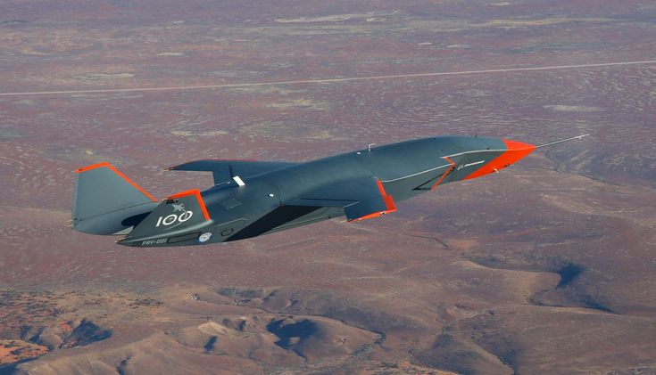

The MQ-28A Ghost Bat is Boeing Australia's collaborative combat aircraft (CCA), designed to operate as a loyal wingman alongside crewed platforms like the F/A-18F Super Hornet and F-35A Lightning II. It represents one of the most significant Australian sovereign defence manufacturing programmes in a generation.
This article is an ongoing systems-level analysis covering the platform's autonomous architecture, sensor integration, modular payload design, and the broader strategic implications for Australian defence capability.
The Ghost Bat is designed and manufactured in Australia by Boeing Defence Australia, with final assembly at the Wellcamp facility in Toowoomba, Queensland. This sovereign manufacturing posture is central to its strategic value. Unlike imported platforms where Australia acts as a customer, the MQ-28A programme builds domestic engineering capability, supply chain depth, and workforce expertise in combat aircraft production.
Under the AUKUS framework, the Ghost Bat positions Australia as a credible contributor to allied autonomous systems development, not merely a consumer of US and UK technology. The platform's modular nose section, designed for rapid payload reconfiguration, creates an architecture that allied nations can adapt to their own sensor and electronic warfare requirements.

The Ghost Bat is not a traditional remotely piloted aircraft. Its autonomous mission management system is designed to enable independent decision-making within mission parameters defined by a human operator in the crewed lead aircraft. This crewed-uncrewed teaming (CUT) concept fundamentally changes the calculus of airpower by allowing a single crewed fighter to coordinate with multiple autonomous wingmen, each carrying different payloads optimised for specific mission roles.
The operational implications are significant. Attritable autonomous platforms extend the sensor and weapons envelope of crewed aircraft without proportionally increasing pilot risk. They can be tasked with higher-risk mission profiles, including suppression of enemy air defences (SEAD), electronic warfare, and forward sensing in contested airspace.
The economic argument for CCA platforms rests on cost-per-effect rather than cost-per-unit. A Ghost Bat is estimated to cost roughly one-third of a crewed fighter, but the relevant comparison is not unit cost. It is the total mission effect achievable per dollar of force structure investment. A mixed fleet of crewed and autonomous platforms can generate greater sortie capacity, wider sensor coverage, and deeper strike options than an equivalent investment in crewed aircraft alone.
This has direct implications for Australia's force structure planning, particularly as the ADF scales its air combat capability under the National Defence Strategy.